4マスへ広がるサイト
マスの間に配置する24種類のサイト。鍵や罠に連動する効果、施設の産出を増やす効果などで、盤面の使い方が広がります。
鍵で道を変え、罠を仕掛ける。
サイトとタロットで、次の一手をもっと自由に。
マスの間に配置する24種類のサイト。鍵や罠に連動する効果、施設の産出を増やす効果などで、盤面の使い方が広がります。
覚醒は選んだ手札を完全削除。形態変化はマスの効果数とロック状態をランダムに変更。サプライでカードや札の操作も購入できます。
基本から応用まで、順番に読めるマニュアルへ。効果の発動順は専用ページで説明し、アイテムは画像と効果を一緒に確認できます。
左上から右へ、1段ずつ下に読む16ページ・4×4のマニュアルです。画像を押すと大きく表示できます。
2026年10月14日更新


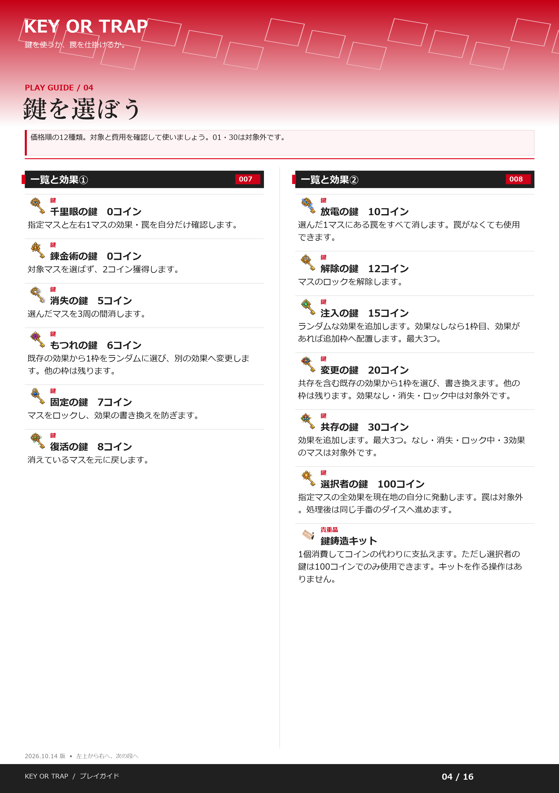
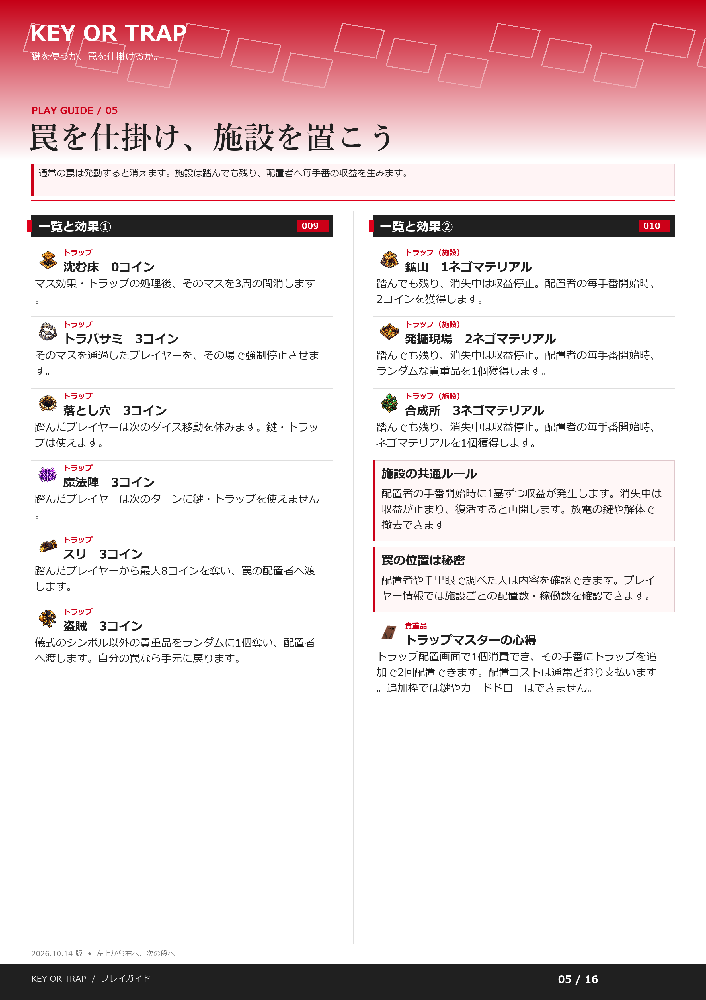
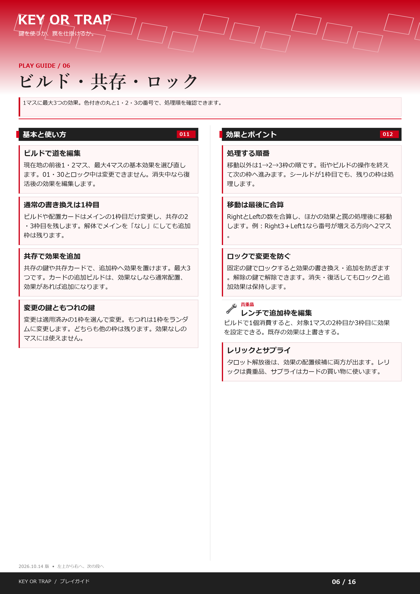
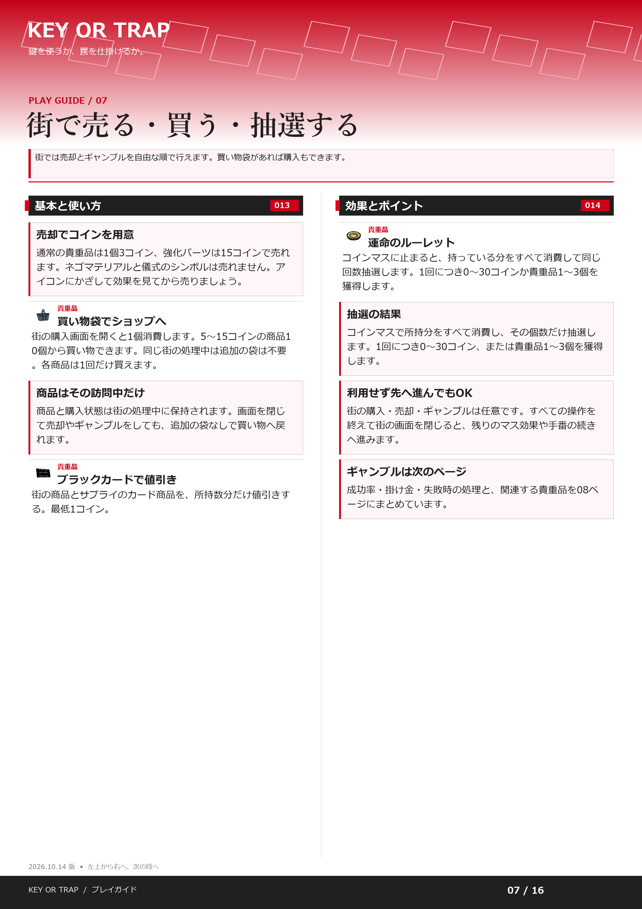
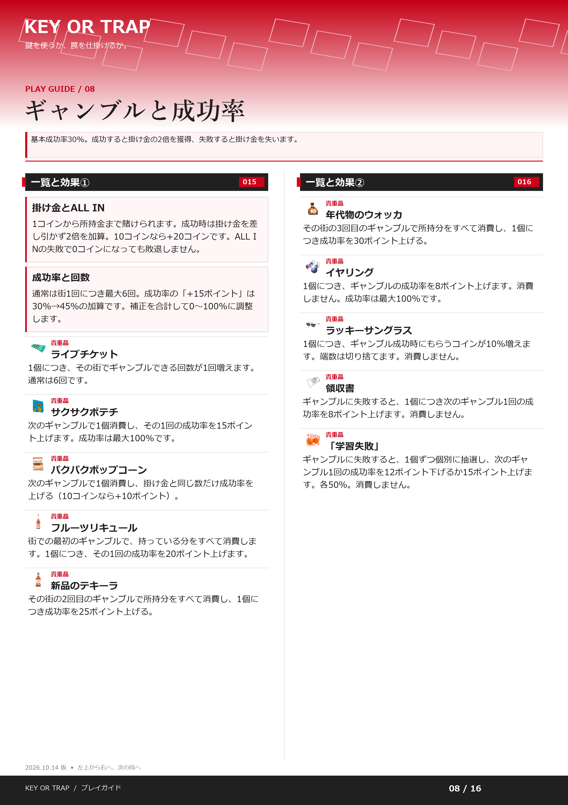
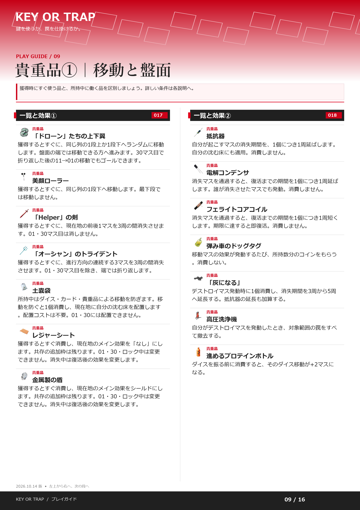
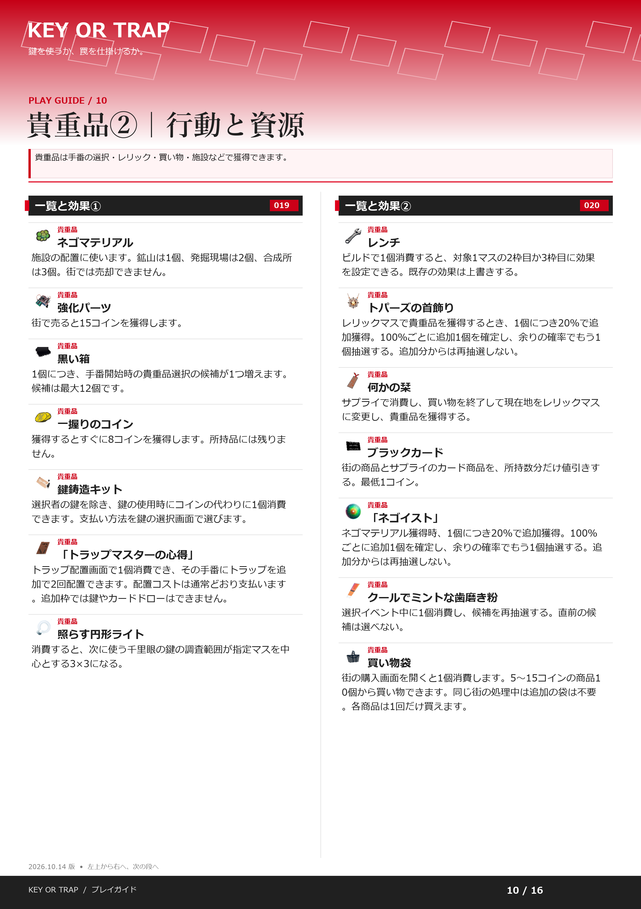
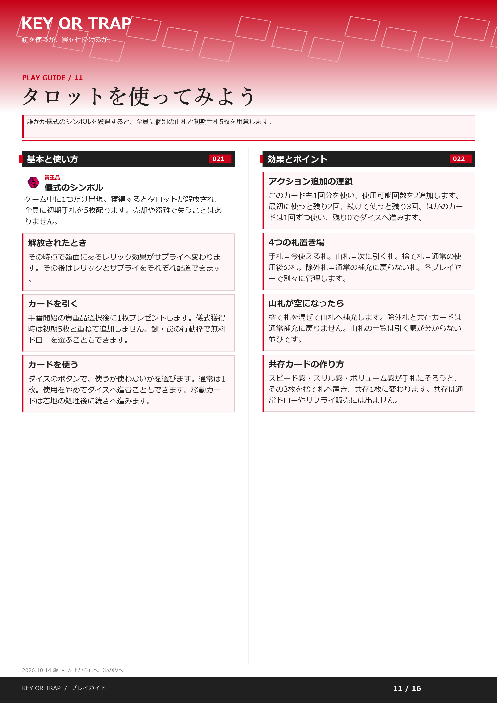
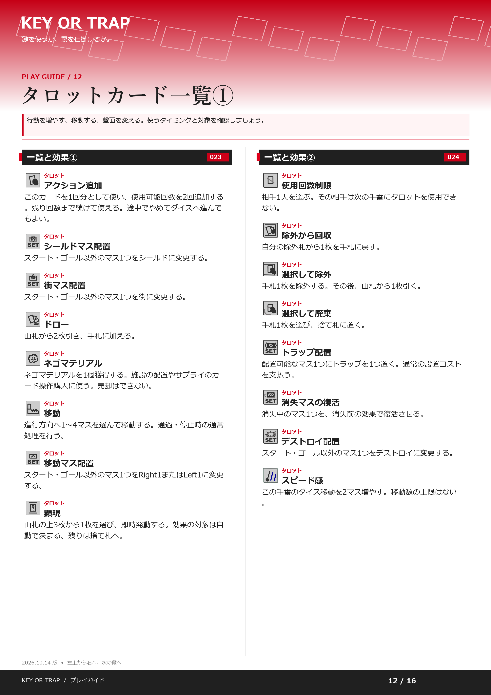
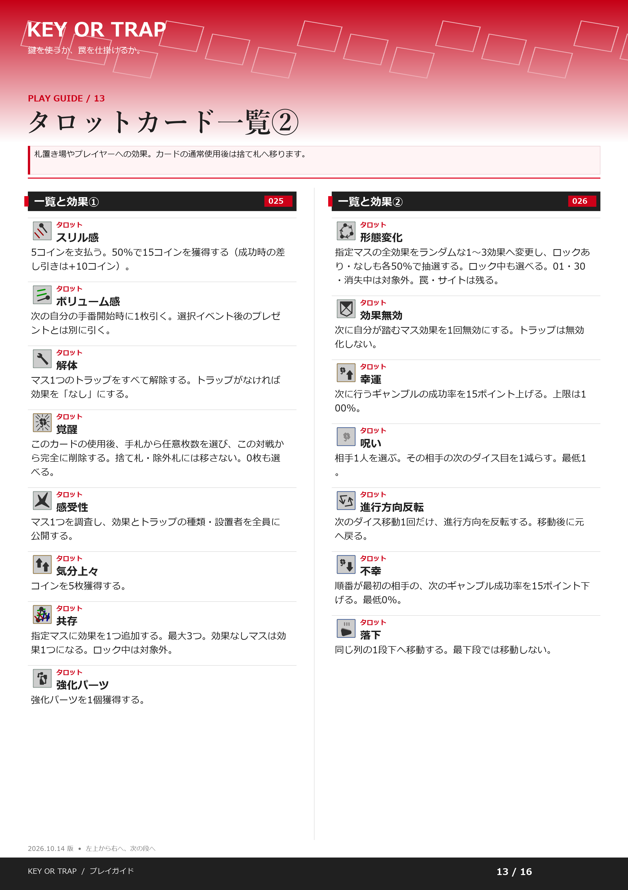
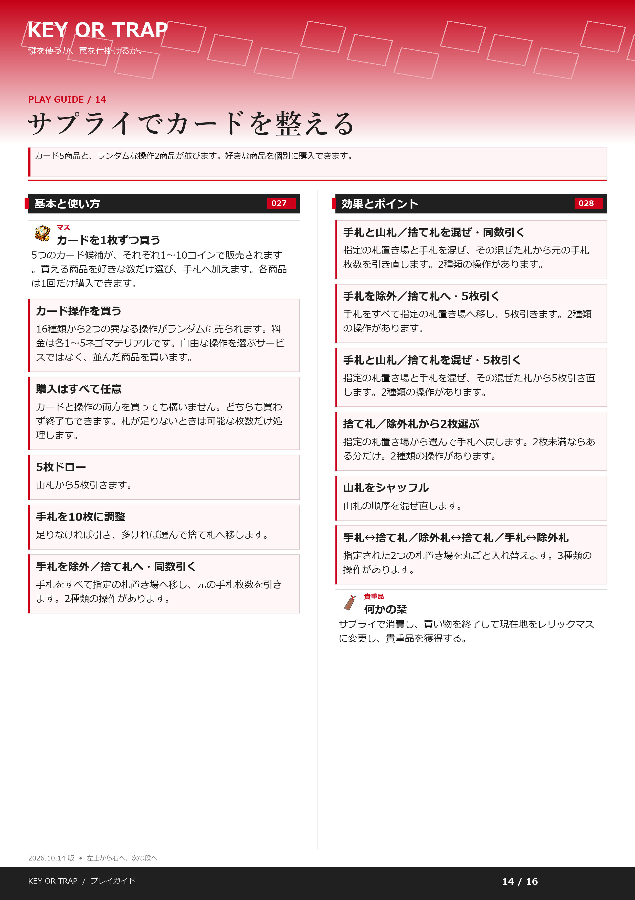
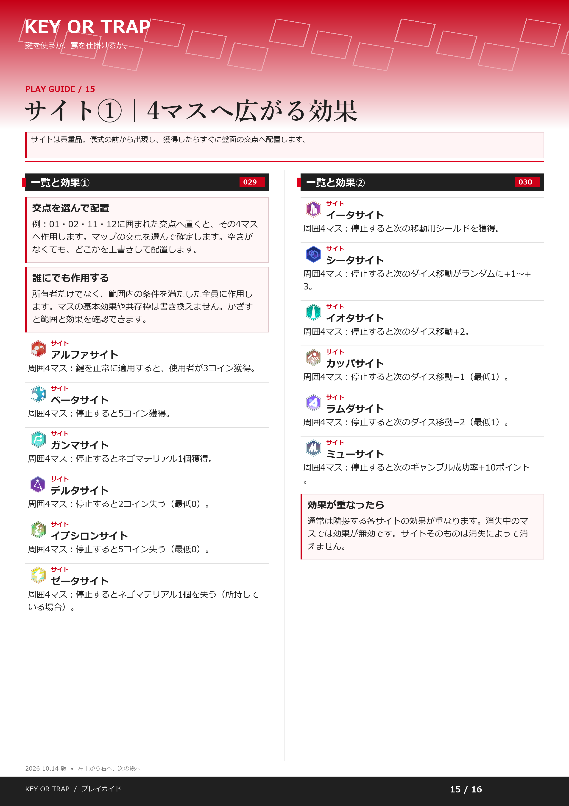
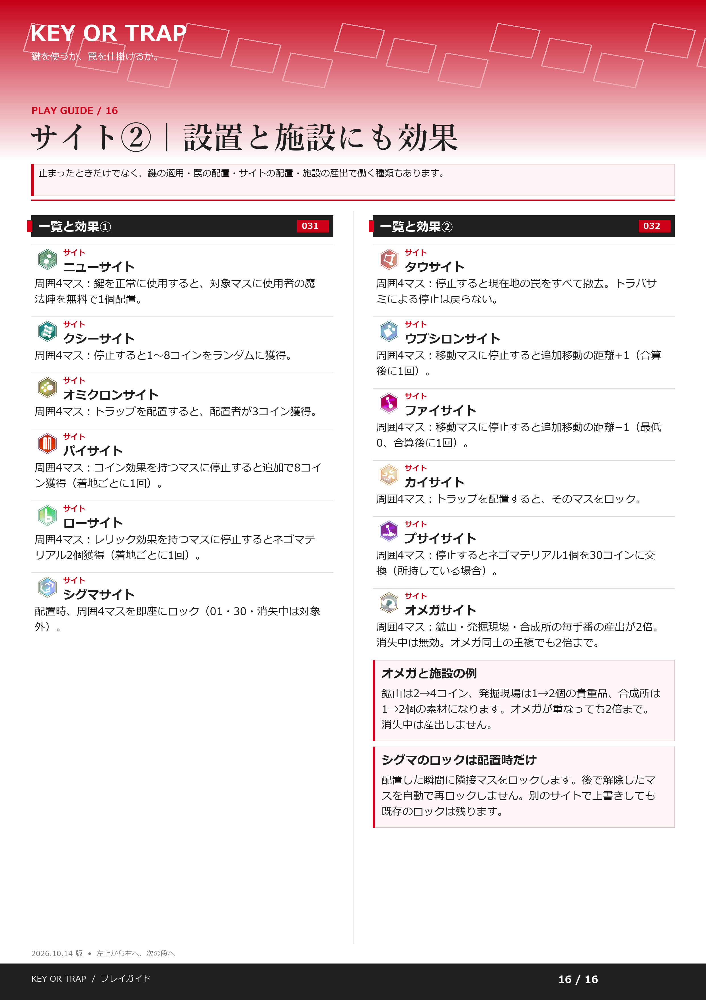